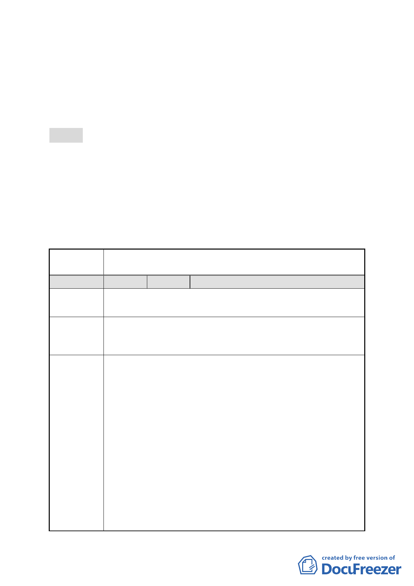

四、本案係市府 99 年 11 月 11 日以府都規字第 09937074103 號函
送到會，自 99 年 11 月 12 日起公開展覽 30 日。
五、申請單位：臺北市政府。
六、辦理機關：臺北市政府。
七、法令依據：都市計畫法第 27 條第 1 項第 4 款。
八、公民或團體陳情意見：計 10 件，詳綜理表。
決議：
一、本停車場用地既經市府評估不具開闢經濟效益，應變更作何
種使用，實應併同周邊地區發展現況與未來需求進行整體性
檢討。故本案退回市府，請納入中正區都市計畫通盤檢討案
內檢討辦理。
二、公民或團體陳情意見審決如后附綜理表。
臺北市都市計畫委員會 公民或團體陳情意見綜理表
案名
變更臺北市中正區南海段一小段 719、724 地號等 2 筆停車場
用地為廣場用地細部計畫案
編號
1 陳情人 康謙信
陳情地點
中正區南海段一小段 719、92 地號
中正區金華街 16 號
陳情理由
建議辦法
1.停車場用地變更為廣場用地不宜，理應變更為多用途廣場
規劃，才是健康的生活環境。
2.居者有其屋方案。
1.停車場用地變更為廣場用地不宜，如能達到多用途廣場用
地才是正途，此方案即能合於都市更新理論相同，更希望
照顧居住者生活安穩、社會祥和，不會因為都市區段變更
不當而又多了一群街民，況且原居住者都已在此落地生根
一甲子，60 年以上，理應有權要求市政府實現居者有其屋
之重點確認，讓原居民能無恐懼安居此地，期盼未來的世
界是一片繁榮光景，生活是快樂的。
2.廣場多用途變更計畫才能完成目標，目的是希望能達到改
善市容景觀，提升廣場功能使建築生活機能，更能照顧到
原居者的居者有其屋、更新生活品質的目標，讓原居者感
覺生活在兒時與家慈生活種種記憶，另增加多用途使用功
能性，達到多用途廣場變更的目的，建設項目多重目標的
遠景。
3.多用途廣場－本專案之申請變更是藉由都市更新計畫，爭
-4-